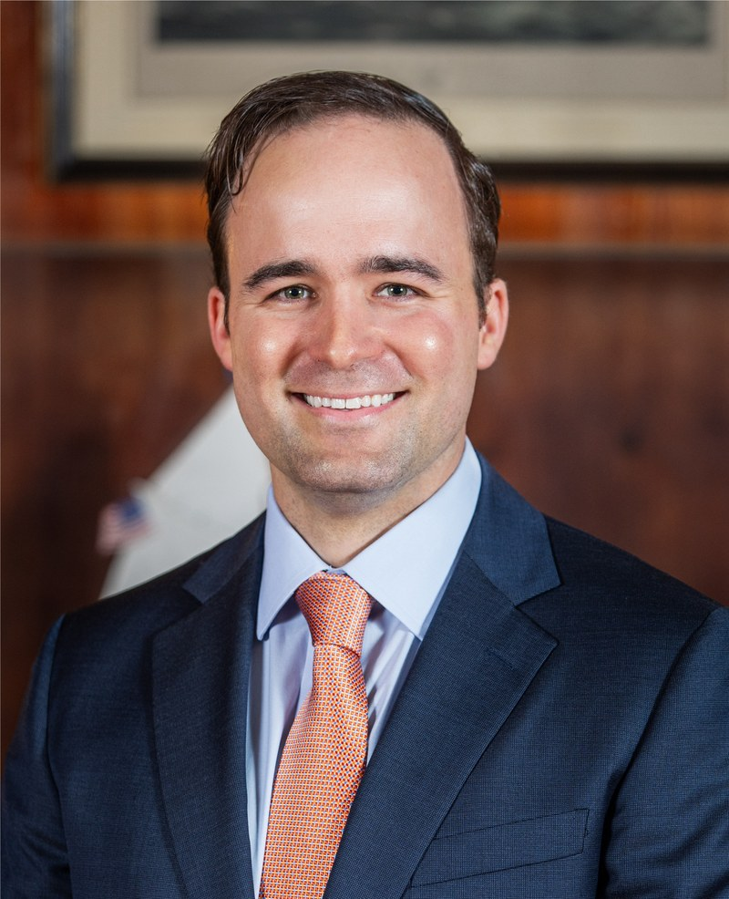
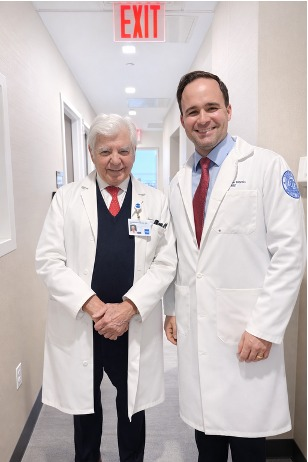
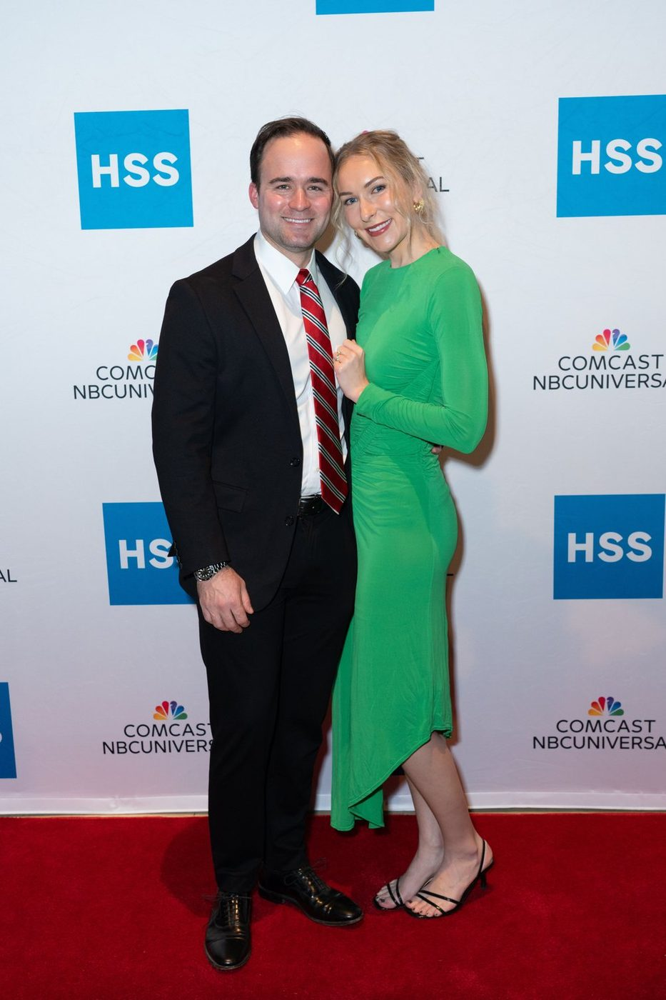
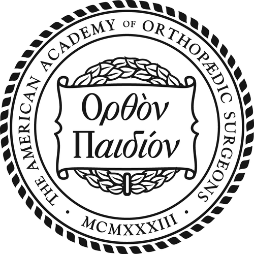
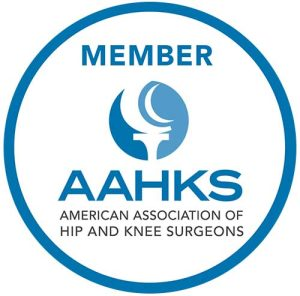
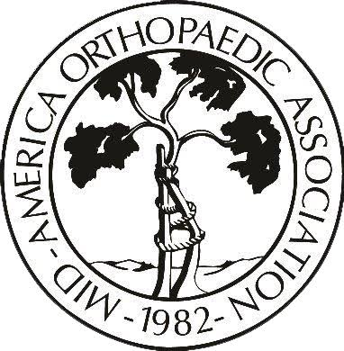
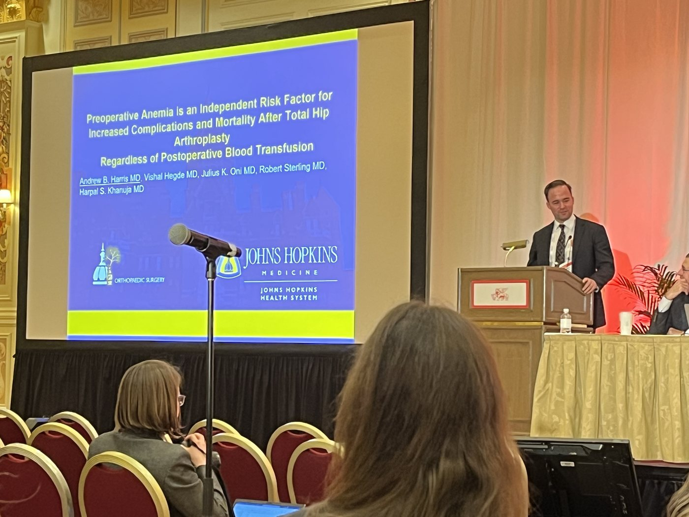
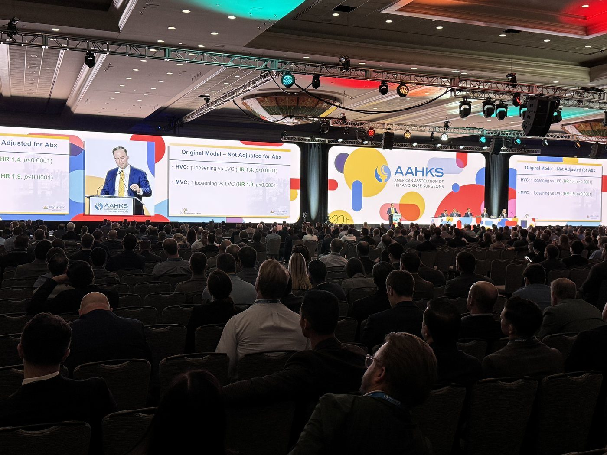
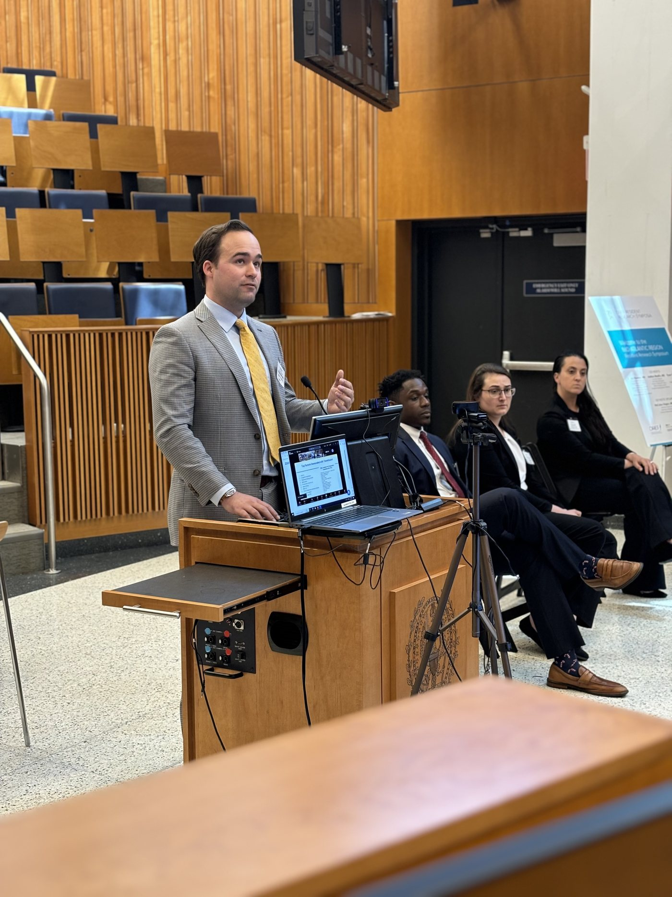
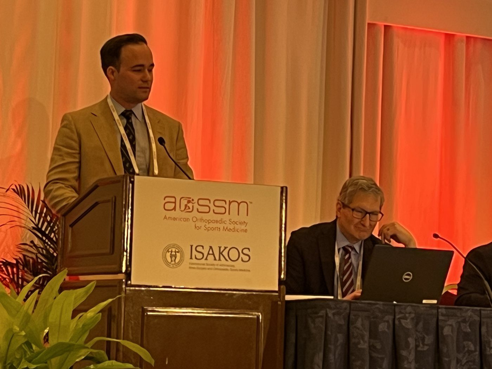

Dr. Harris grew up in Boca Raton, Florida with a twin and a younger brother. Both of his parents are engineers. He found his way to joint replacement during his medical training, when he saw what modern techniques can accomplish. Patients who had been in pain every day of their lives returning to normal activity, moving and sleeping without thinking about the joint at all. Hip and knee replacement are among the most successful operations in all of medicine, and the ability to have such a positive impact on patients' lives is what drew him to it.

His path to becoming an orthopaedic surgeon began at the University of Florida, where he earned his undergraduate degree in Applied Physiology and Kinesiology, before attending the University of Florida College of Medicine for his M.D. There, he graduated near the top of his class, and received the C. Craig Tischer, M.D. Faculty Award for Research, given to one graduating student each year, for work on improving outcomes after orthopaedic surgery.
He completed his residency in orthopaedic surgery at The Johns Hopkins Hospital. His program director selected him as Education Chief Resident, responsible for the teaching curriculum followed by every resident in the program. He also served as the program’s representative to the American Academy of Orthopaedic Surgeons (AAOS) Resident Assembly. Residents from programs across the country then elected him to its Executive Committee.

He went on to fellowship training in hip and knee replacement at the Hospital for Special Surgery in New York City, ranked the number one hospital in the country for orthopaedics by U.S. News & World Report for sixteen consecutive years. His fellowship centered on state-of-the-art techniques in all aspects of hip and knee replacement, including complex primary and revision joint replacement. That training prepared him for patients with unusual anatomy, previous surgery, or bone loss, and for replacements that have worn out, loosened, or become infected.
Research is a major interest alongside caring for patients. He has authored more than 100 peer-reviewed publications in orthopaedic journals, and reviews for several journals. His work is presented regularly at national and international meetings.
He has also volunteered with Operation Walk, traveling to Ecuador to perform hip and knee replacements at no cost for patients who would otherwise have no access to them.
Away from the hospital, Dr. Harris lives in Chicago with his wife, a Chicago native.

American Academy of Orthopaedic Surgeons (AAOS)
American Association of Hip and Knee Surgeons (AAHKS)
Mid-America Orthopaedic Association (MAOA)Dr. Harris’s research is presented regularly at major national and international orthopaedic meetings.




B.S., Undergraduate
M.D., Medical School
C. Craig Tischer, M.D. Faculty Award for Research
Science of Clinical Investigation Training Program
Completed between 3rd and 4th year of medical school
Residency, Orthopaedic Surgery
Education Chief Resident
Fellowship, Hip & Knee Replacement
Advanced training in complex primary and revision hip & knee replacement